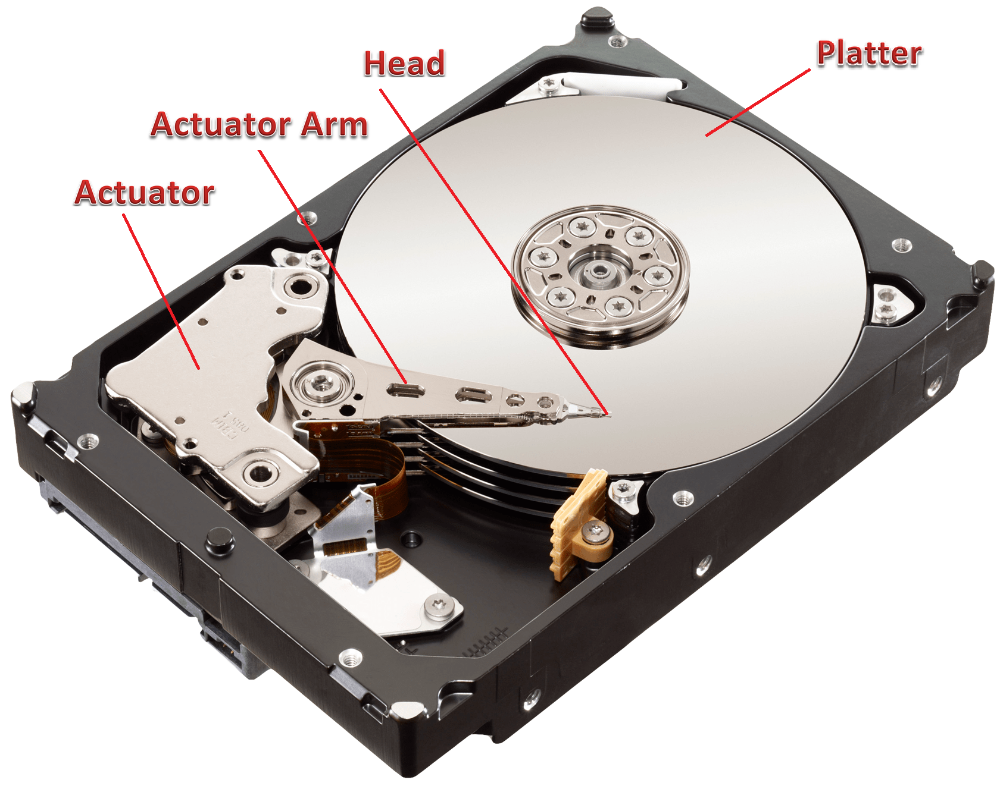
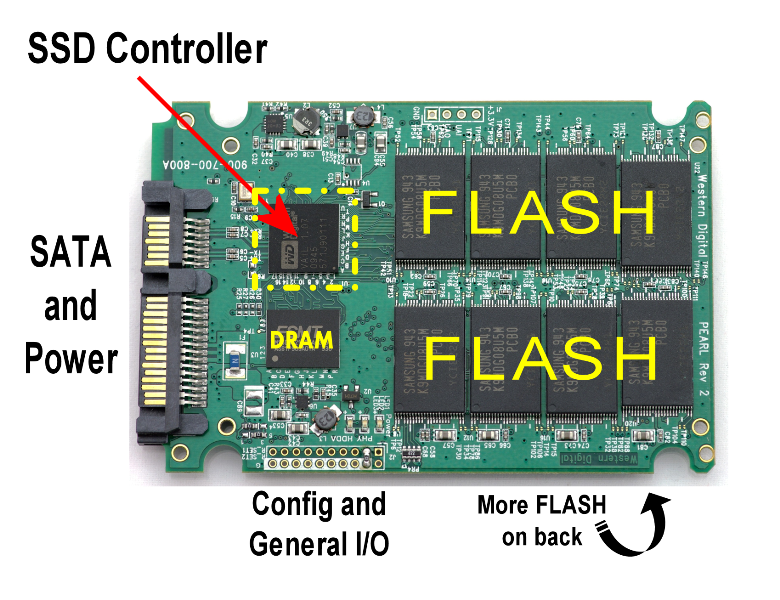
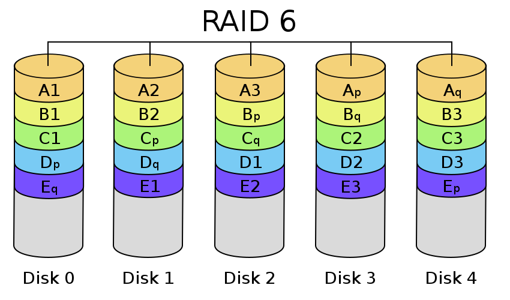

Plan ========= * Storages overview: parameters, structure, types (only block storage) * SATA/SAS/NVME, HDD/SSD/Optane & Co * How to monitor/test --- Storage ======= * Only block storage covered * Service, which can read/write data in fixed block sizes (sectors) * Sectors located as array, and indexed with a single continues number(*) * few words about shared FS (cephfs/glusterfs/...) --- Requirements ============ * Data safety * Performance/scalability * Functionality --- Performance =========== * latency * iops * BW * [Biased benchmarks](http://matthewrocklin.com/blog/work/2017/03/09/biased-benchmarks) --- IOPS, BW, latency = func(QD) ============================ * QD is very important * QD == 1 --> latency == 1 / IOPS .center[] --- Latency distribution ==================== --- Average vs mediana/percentiles ============================== {m1, m2, m3, ...} -> V1, V2, ... Average ------- * Direct outcome of min-square error * Hightly affected by outliers * Low-noisy symmetric distribution. E.g. Normal, etc (p = e**(-x**2)). * IOPS, BW Mediana/percentiles ------------------- * Direct outcome of min module error * Less affected by ouliers, works for asymetric data * Latency --- Disk protocols ============== * (P)ATA (IDE) - Advanced Technology Attachment * SATA - Serial ATA. SATA3 ~ 600 MiBps * SCSI - Small Computer System Interface * SAS - Serial Attached SCSI ~ 1.4GiBps * NVME - Non-Volatile Memory Host Controller Interface ~ 4GiBps (4xPCI Gen 3) --- HDD structure ============= <center></center> --- HDD data ========= <center><img src="images/hdd_structure.jpeg" width="400"></center> --- Constant linear size ==================== <table cellpadding="20" cellspacing="20" width="100%"><td valign="center"> <tr><img src="images/sectors_size.jpg" width="330"></tr> <tr></tr> </td></table> --- HDD === <center>request_time = Lat0 + SIZE / BW</center> * SATA(5400/7200) - 10ms / 7ms lat - 80-150 MiBps linear - READ == WRITE - ~64MiB RAM cache * SAS(15k) - 3ms lat - 180-250 MiBps linear - READ == WRITE - ~256MiB RAM cache * SMR (Shingled magnetic recording) * LAR/MAR * vulnerable to physical stress --- SSD === <center></center> --- SSD === <center></center> <center></center> --- SSD === * minimal read/write size - page (512-4k bytes) * can't write 0 on top of 1 * block need to be erased prior to any write * blocks - minimal unit of erasure (larger than page) * hidden space * background erasure * erasure slow and descructive opearation, which limits SSD lifetime (look for wearing level) * mixed load VERY slow --- SSD === * Impossible to safely delete data * SLC/MLC/TLC/QLC * xLC cache <center></center> --- SSD === * read - 1M+ IOPS, 100mks lat, QD>32 * write - 100-100k IOPS, 100mks-100ms lat, QD>32, might be VERY inconsistent <center></center> --- SSD === request_time = random.rand(1, 100000000) --- NVME SSD ======== <center></center> <center></center> --- NVME SSD ======== * 64k queus with 64k OPS each * direct CPU - SSD controller interface * fast ssd with large SLC/RAM cache * 4 x PCI-E 16 bus * ~2GiBps peak, 200-500 MiBps stale linear * 1k-10k IOPS write stale * 10k-1kk IOPS read * 1ms-1mks lat * Many super-duper extra costly solutions --- Optane ====== * ~x10 IOPS on small QD comparing to best NVME (==lower latency) * Good on mixed ops (read+write) * Not really better than NVME SSD on other loads * ~x5 more costly than NVME, smaller sizes * Will be awailable as DRAM modules * waiting for Optane caches for SSD --- Overview ======== * HDD becaming a new tape * SSD becaming a new HDD * NVME is quite fast * New technologies closing to DRAM speed --- Safety ====== (HDD failure rate 2017)[https://www.backblaze.com/blog/hard-drive-stats-for-2017/] * DC HDD failure rate ~2% per quater * HDD tend to fail unexpectedly and unrecoverably * DC SSD much more reliable * SSD tend to fail predictively (see S.M.A.R.T.) and into read-only mode --- Result table ============ * Your mileage may vary (for SSD/NVME) | | Size, TiB | $/TiB | IOPS WR | IOPS RD | BW WR MB| BW RD MB| Lat ms | |:--------:|----------:|:-----:|:-------:|:-------:|:-------:|:-------:|:------:| | SATA HDD | 10 | 25-50 | 50-150 | 50-150 | 100-150 | 100-150 | 3-7 | | SSD | 2 | 200 | 100-5k | 1k-20k | 50-400 | 200-500 | 0.1-1 | | NVME | 2 | 400 | 400-20k | 2k-50k | 200-1.5k| 500-2k | 0.01-1 | --- Caches & buffers ================ * buffers only to aggregate requests before execution * caches - read/write? fast/small temporary storage Cache modes: ============ * Write-back * Write-through --- Tuplical linux caches ===================== * User space process X GB RAM * libs in user space process XX MB RAM * Kernel fs cache all free RAM * Driver IO queus <=1k requests * Controller cache X GB RAM * Disk cache XX MB RAM * Disk tier XX GB FLASH --- Net Caches ========== * qemu/vm cache * rbdlib cache * network buffers * .... --- Sync modes ========== * Sync mode tell how to use caches during operation * Normal IO - use all caches * Direct IO - bypass all caches up to device * Sync IO - bypass/flash all(*not really) caches before IO confirmed --- qcow2 & co ========== * lazy allocation * write amplification --- Disk usage patterns =================== * SQLDB * Journals * etc --- RAID 0 - stripe =============== * Latency == disk * IOPS/BW == disk * 2 <center><img src="images/raid0.png" width="300"></center> --- RAID 1 - mirror =============== * Latency 50ppc == disk 75ppc * READ IOPS/BW == disk * 2 * Write IOPS/BW == disk <center></center> --- RAID X - EC codes & Co ====================== * Latency up * READ ~ * Write ~ * Write amplification * Typical = 4 + 2 <center></center> --- RAID ==== * RAID controllers * caches * battery --- LVM/dmsetup =========== Block mapping, Compression, dedup, encryption <img src="images/lvm.png" width="700"> --- Monitoring & testing ==================== --- List drives =========== ```bash ~ ᐅ ls /sys/block nvme0n1 sda sdb # use <$FNAME instead ~ ᐅ for name in $(ls -d /sys/block/sd? /sys/block/nvme?n?) do rot=$(cat $name/queue/rotational) scheduler=$(cat $name/queue/scheduler) fname=$(basename $name) echo "$fname rotational=$rot scheduler=$scheduler" done sda rotational=0 scheduler=noop deadline [cfq] sdb rotational=1 scheduler=noop deadline [cfq] nvme0n1 rotational=0 scheduler=[none] ``` --- ```bash List drives =========== ~ ᐅ lsblk NAME MAJ:MIN RM SIZE RO TYPE MOUNTPOINT sda 8:0 0 465.8G 0 disk ├─sda1 8:1 0 32G 0 part [SWAP] └─sda2 8:2 0 400G 0 part /media/data sdb 8:16 0 3.7T 0 disk └─sdb1 8:17 0 3.7T 0 part /media/koder/... nvme0n1 259:0 0 465.8G 0 disk └─nvme0n1p1 259:1 0 465.8G 0 part / ``` --- List drives - nvme ================== ```bash ~ ᐅ sudo nvme list Node SN Model ------------ --------------- ------------------------- /dev/nvme0n1 S3EUNB0J418745J Samsung SSD 960 EVO 500GB ``` --- /proc/diskstat ============== ```bash ~ ᐅ cat /proc/diskstats 259 0 nvme0n1 529033 200 ... 259 1 nvme0n1p1 528903 200 ... 8 0 sda 15994 145 ... 8 1 sda1 95 0 ... 8 2 sda2 15817 145 ... 8 16 sdb 3283 1 ... 8 17 sdb1 3259 1 ... ``` --- iostat ====== ```bash ~ ᐅ iostat -xdm 1 /dev/sd? /dev/nvme?n? Device r/s w/s rMB/s wMB/s nvme0n1 0.00 0.00 0.00 0.00 sda 0.00 15.00 0.00 0.06 sdb 0.00 0.00 0.00 0.00 rrqm/s wrqm/s %rrqm %wrqm r_await w_await 0.00 0.00 0.00 0.00 0.00 0.00 0.00 0.00 0.00 0.00 0.00 2.67 0.00 0.00 0.00 0.00 0.00 0.00 aqu-sz rareq-sz wareq-sz svctm %util 0.00 0.00 0.00 0.00 0.00 0.04 0.00 4.27 1.87 2.80 0.00 0.00 0.00 0.00 0.00 ``` --- top === ```bash ~ ᐅ top top - 22:31:39 up 9:58, 3 users, load average: 0.25, 0.80, 1.45 Tasks: 531 total, 1 running, 530 sleeping, 0 stopped, 0 zombie %Cpu(s): 6.3 us, 1.8 sy, 0.0 ni, 91.2 id, 0.8 wa, 0.0 hi, 0.0 si, 0.0 st KiB Mem : 65611812 total, 19063468 free, 19354020 used, 27194324 buff/cache KiB Swap: 33554428 total, 33554428 free, 0 used. 44842900 avail Mem PID USER PR NI VIRT RES SHR S %CPU %MEM TIME+ COMMAND 5459 root 20 0 737028 256092 142408 S 10.2 0.4 24:10.87 Xorg 5640 koder 20 0 6357652 1.383g 110132 S 9.5 2.2 61:28.33 gnome-shell 10368 koder 20 0 641820 58404 33700 S 5.9 0.1 0:18.26 python2 6433 koder 20 0 1985160 565556 206300 S 3.3 0.9 76:42.56 chrome 10013 koder 20 0 1818732 306256 141324 S 3.0 0.5 12:11.14 atom 10055 koder 20 0 2803552 395564 138652 S 2.6 0.6 18:13.92 atom 23617 root 20 0 3754464 1.126g 17624 S 2.3 1.8 10:31.83 qemu-system-x86 11457 koder 20 0 1334168 189476 84764 S 2.0 0.3 0:44.20 chrome 25406 koder 20 0 2164744 250720 110520 S 2.0 0.4 10:17.57 Telegram ``` --- Main caliber - blktrace/blkparse/btt ==================================== ```bash ~ ᐅ sudo blktrace -d /dev/sda -w 10 ~ ᐅ blkparse -i sda.blktrace.* -d sda.bin ~ ᐅ btt -i sda.bin | less ``` --- More ==== http://www.brendangregg.com/linuxperf.html --- S.M.A.R.T ========= ```bash ~ ᐅ sudo smartctl -a /dev/sda === START OF INFORMATION SECTION === Model Family: Samsung based SSDs Device Model: Samsung SSD 840 Series Serial Number: S14LNEACA02183K LU WWN Device Id: 5 002538 5500180b9 Add. Product Id: 00000000 Firmware Version: DXT06B0Q User Capacity: 500,107,862,016 bytes [500 GB] Sector Size: 512 bytes logical/physical Rotation Rate: Solid State Device Device is: In smartctl database [for details use:... ATA Version is: ACS-2, ATA8-ACS T13/1699-D revision 4c SATA Version is: SATA 3.1, 6.0 Gb/s (current: 6.0 Gb/s) Local Time is: Mon Jun 25 19:34:59 2018 EEST SMART support is: Available - device has SMART capability. SMART support is: Enabled ``` --- ```bash SMART Attributes Data Structure revision number: 1 Vendor Specific SMART Attributes with Thresholds: ID# ATTRIBUTE_NAME FLAG VALUE WORST THRESH TYPE UPDATED WHEN_FAILED RAW_VALUE 5 Reallocated_Sector_Ct 0x0033 100 100 010 Pre-fail Always - 0 9 Power_On_Hours 0x0032 095 095 000 Old_age Always - 21287 12 Power_Cycle_Count 0x0032 096 096 000 Old_age Always - 3904 177 Wear_Leveling_Count 0x0013 093 093 000 Pre-fail Always - 62 179 Used_Rsvd_Blk_Cnt_Tot 0x0013 100 100 010 Pre-fail Always - 0 181 Program_Fail_Cnt_Total 0x0032 100 100 010 Old_age Always - 0 182 Erase_Fail_Count_Total 0x0032 100 100 010 Old_age Always - 0 183 Runtime_Bad_Block 0x0013 100 100 010 Pre-fail Always - 0 187 Uncorrectable_Error_Cnt 0x0032 099 099 000 Old_age Always - 1 190 Airflow_Temperature_Cel 0x0032 066 045 000 Old_age Always - 34 195 ECC_Error_Rate 0x001a 200 200 000 Old_age Always - 1 199 CRC_Error_Count 0x003e 099 099 000 Old_age Always - 1 235 POR_Recovery_Count 0x0012 099 099 000 Old_age Always - 238 241 Total_LBAs_Written 0x0032 099 099 000 Old_age Always - 4267032827 ``` --- ```bash SMART Error Log Version: 1 No Errors Logged SMART Self-test log structure revision number 1 No self-tests have been logged. SMART Selective self-test log data structure revision... SPAN MIN_LBA MAX_LBA CURRENT_TEST_STATUS 1 0 0 Not_testing 2 0 0 Not_testing 3 0 0 Not_testing 4 0 0 Not_testing 5 0 0 Not_testing 255 0 65535 Read_scanning was never started Selective self-test flags (0x0): After scanning selected spans, do NOT read-scan ... If Selective self-test is pending on power-up, resume ... ``` --- smart ===== ```bash ~ ᐅ sudo nvme smart-log /dev/nvme0n1 Smart Log for NVME device:nvme0n1 namespace-id:ff.. temperature : 33 C available_spare : 100% available_spare_threshold : 10% percentage_used : 3% data_units_read : 11,265,241 data_units_written : 18,829,360 host_read_commands : 166,538,853 host_write_commands : 478,308,717 power_cycles : 371 power_on_hours : 1,606 unsafe_shutdowns : 49 media_errors : 0 num_err_log_entries : 7 Warning Temperature Time : 0 Critical Composite Temperature Time : 0 Temperature Sensor 1 : 33 C Temperature Sensor 2 : 37 C ``` --- Performance tests ================= * real app * low-level * syntetic - tpc - spc - vdbench --- <center># dd bs=4K oflags=direct ..</center> =========================== .center[] --- Performance test ================ ```bash dd if=/dev/zero of=/... bs=16M count=1K oflags=direct ``` --- Performance test: fio ===================== * 4k random read/write direct * large block random linear read/write * sync? * different QD * https://github.com/axboe/fio/examples --- Performance test: fio ===================== ```bash [global] filename=fiotest.bin direct=1 sync=0 time_based=1 ramp_time=5 runtime=10 size=10g group_reporting=1 unified_rw_reporting=1 wait_for_previous=1 [randwrite] rw=randwrite blocksize=4k ioengine=libaio iodepth=64 ``` --- ```bash [randread] rw=randread blocksize=4k ioengine=libaio iodepth=64 [swrite] rw=write blocksize=4m iodepth=1 [sread] rw=read blocksize=4m iodepth=1 ``` --- Performance test: fio ===================== ```bash randwrite: (groupid=0, jobs=1): err= 0: pid=4019: Sun Jun 24 23:41:17 2018 mixed: io=3371.9MB, bw=345244KB/s, iops=86304, runt= 10001msec slat (usec): min=1, max=10149, avg= 4.80, stdev=14.84 clat (usec): min=86, max=46710, avg=734.63, stdev=966.05 lat (usec): min=105, max=46713, avg=740.17, stdev=966.46 clat percentiles (usec): | 1.00th=[ 253], 5.00th=[ 290], 10.00th=[ 298], 20.00th=[ 310], | 30.00th=[ 374], 40.00th=[ 442], 50.00th=[ 532], 60.00th=[ 628], | 70.00th=[ 788], 80.00th=[ 892], 90.00th=[ 1160], 95.00th=[ 1464], | 99.00th=[ 4704], 99.50th=[ 6880], 99.90th=[10304], 99.95th=[11968], | 99.99th=[28032] lat (usec) : 100=0.01%, 250=0.94%, 500=45.05%, 750=21.59%, 1000=16.23% lat (msec) : 2=12.83%, 4=2.12%, 10=1.14%, 20=0.09%, 50=0.02% cpu : usr=12.99%, sys=42.27%, ctx=665992, majf=0, minf=3 IO depths : 1=0.1%, 2=0.1%, 4=0.1%, 8=0.1%, 16=0.1%, 32=0.1%, >=64=187.2% submit : 0=0.0%, 4=100.0%, 8=0.0%, 16=0.0%, 32=0.0%, 64=0.0%, >=64=0.0% complete : 0=0.0%, 4=100.0%, 8=0.0%, 16=0.0%, 32=0.0%, 64=0.1%, >=64=0.0% issued : total=r=863133/w=0/d=0, short=r=0/w=0/d=0, drop=r=0/w=0/d=0 latency : target=0, window=0, percentile=100.00%, depth=64 ``` --- Performance test ===================== * monitor system during test --- Performance test: wally ===================== * wally